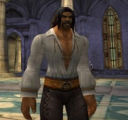

Les Terres de Kirin Tor
Virtus
Points : 2

Joué par :
[ Information masquée ]
Age : 31
Lieu de naisance : Stormwind
Signe de naissance : Chouette
Sexe : Homme
Race : Humain
Faction : Alliance
Formation : Paladin
Guilde :
Artisanat 1 : Mineur
Artisanat 2 : Forgeron
Envoyer un MP
Informations hrp : Le port altier, la figure saillante, la barbe drue d'un noir d'ébène, à l'instar de l'opulente et ténébreuse toison hirsute qui l'enveloppe de sa cime jusqu'à la lisière de ses hanches. Parangon de la chevalerie triomphante, il s'astreint à une parfaite courtoisie, à un parler empreint de rigueur et d'atticisme en toutes circonstances, à un sourire agréant chaque syllabe, quelle qu'en soit la teneur. L'homme somatique, lui, est robuste ; éphèbe vaillamment dressé, avec stoïcisme, assurance et désinvolture face à l'adversité, monument d'aspérité martiale aux muscles noueux, nantis de multiples ramifications, bâti à la façon de la cyme par les mains, peut-on parfois croire, de Mars lui même. A brûle-pourpoint, quelque émotion puissante envahit l'observateur attentif. Une certaine liesse, une félicité inébranlable, marque d'un profond optimisme.
Description : Tristan Amadis Virtus de Valfroid, dix-septième Vicomte de Turenne.
Sous l'égide bienveillante de l'aurore printanière naquit, au sein du bastion de Montfort, érigé à quelques lieues de Stormwind, le jeune Virtus, baptisé ainsi alors même que s'annonçaient seulement les prolégomènes attenants à l'éros, alors même que sous de cléments auspices muait, imperceptible, l'être fluet et insignifiant lové dans la conque maternelle.
Enfant puîné d'Alexandre Antoine Amadis de Valfroid, Duc de Choiseul, et de son épouse Anastasie. Enfant désiré, mâle prédestiné à l'accomplissement des plus grands triomphes, des plus grandes conquêtes, il obtint en apanage le Comté de Turenne, riche parcelle du domaine ducal ; Virtus fut dès son plus jeune âge investit de maintes prérogatives, certes, mais aussi astreint à de titanesques impératifs. Son frère Louis de trois ans son aîné étant destiné à régenter le domaine, la sentence était nette, son avenir arrêté ; il lui faudra arpenter le sentier des armes. Moins belliciste que survivancier, esprit sensible non dénué de lyrisme, aimant flâner dans les ruelles escarpées et sinueuses du quartier latin de Stormwind, d'une remarquable intelligence en affaire, en somme bien nanti par Dame Nature, il s'accommoda fort mal de ses fonctions, et des austérités inhérentes à celles-ci.
Tiraillé par de nombreux conflits intrinsèques, il trouva, dans la fleur de l'âge, réponses à nombre de ses questionnements dans les enseignements prodigués par l'abbé de Nortshire, où il se trouvait en garnison. Sa propension à l'hédonisme, son accoutumance à l'épicurisme dictée par l'impérieux désir de se dérober à la morne vie en faction, sa désinvolture, son cynisme bientôt gâtaient son être et son âme et le desservaient grandement. Science sans conscience n'est que ruine de l'âme ; le jeune Virtus, à l'aune de la déclamation de sa profession de foi, de son entrée dans les ordres, en avait la mesure. Et ce jour vint enfin ! Erigeant dès lors en règles de vie des préceptes glorifiant la noblesse de coeur et d'esprit, cultivant la compassion et la philanthropie, s'attelant à ne point renier sa nature et les siens, tout en progressant sur les voies de la Lumière, Virtus vit muer la haine farouche de sa propre condition, et du fatum qui l'étreignait, en un positivisme résolu et serein.
Tribun de la plèbe, Chevalier ganté de velours, maniant la plume sur le vélin pareillement aux armes, le voilà prompt à un certain éclectisme, insatiable de vie, libre penseur, homme soucieux des interrogations de son temps, homme d'avenir aussi, confiant quant à ses dénouements, et, rejetant tout fatalisme, convaincu du rôle de l'homme en son propre accomplissement, par la solidarité qui caractérise, en ses plus belles heures, l'espèce, et par l'émancipation de l'âme et de l'esprit sur la concupiscence et les appétences qui forment l'inextricable lien reliant l'homme à sa condition animale, sans pour autant renier la grâce satinée, l'ineffable charme féminin, encensant celles que la vénusté a pris pour modèles.
L'existence alors était douce. Rarement maître de se faire aimer, l'homme l'est de se faire estimer ; Virtus s'y attelait auprès de la jeune communauté de Northshire, insufflant quelques embruns de foi et de bonté, refusant de fixer tout à fait son esprit à l'aune d'une exhortation à la haine, et ne prenant pour mécréant non ceux qui ne logaient point à son Eglise, mais ceux qui s'en écartaient effectivement par leurs actes. L'appel des armes, cependant, et la nécessaire abdication de soi face aux serments d'airain prononcés, la paume pressée contre son coeur balbutiant, eurent raison de ses atermoiements. Partant, flamberge au vent, pouvait-il seulement apercevoir les bribes de déchéance, l'implacable déclin dans les tambours de guerre, le souffre et le sang. Ne pouvant s'y dérober, son père, Commandant en charge d'un important détachement de cavaliers, l'accompagna. Le trépas, le sang frémissant, le marasme fangueux, les arquebuses tonnant au rythme de l'impassible fauche des âmes...
Son père poignardé, par son aide de camp, un obscur hoberau ayant accédé aux plus hautes dignités au sortir de ce jour funeste, sa famille ruinée, son frère occit par quelque nébuleux bretteur de passage, sa ruine totale. Virtus renia fortune et distinctions militaires, et embrassa la monacale existence d'un pèlerin imbu de sérénité, placide face à la détresse, épris de la seule ataraxie, de la seule quiétude.
Et son âme encore, à l'aube de sa vingt-sixième année, vibra, empoignée par la prêche et confortée par le pragmatisme d'un esprit bien fait, en son essence dédié à penser l'Autre et à sublimer sa condition.